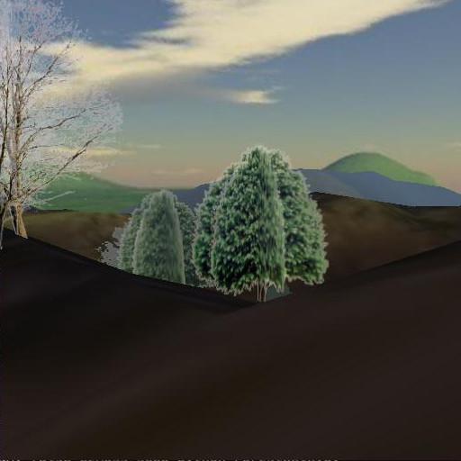

User input and Environment Utilities¶
Keyboard¶
Keyboard input has been used in all the demo programs without any real explanation so you’ve probably got a good idea how to use it but it might be worth explaining a little more about how it works.
One aspect of python that people often find strange is the absence of non-blocking key input as a “built-in” function. The reasons is almost certainly because of the desire to make python applications run unaltered on all platforms. In pi3d we have to provide a host of different options for keyboard input: CursesKeyboard, SysKeyboard, x11Keyboard, AndroidKeyboard (which is really just a placeholder) and PygameKeyboard. Normally the appropriate one will be loaded for the environment you are using but this is a surprisingly non-straightforward area that may need some careful thought especially on non-standard platforms or using non-standard keyboards or even simply trying to use keys that map to variable key-codes.
Mouse¶
The Mouse class operates in a similar fashion to the Keyboard to some extent, but the default linux (and Raspberry Pi) mechanism reads events directly from the operating system. The disadvantage of this is that the programs have to be launched with root privileges ($ sudo ...). The advantage is that the mouse movements continue to provide input even when the cursor is outside the relevant window or even “stuck” against a screen edge. This means that it’s possible to click on other things on the desktop, including the X to close the pi3d window, if needed! To achieve the same effect with the pygame mouse input (as used with Windows but available on linux (except Raspberry Pi) by using Display.create(use_pygame=True)), the cursor is “warped” to the centre of the window each frame and hidden. There are slight differences in the behaviour of Mouse functions with the two systems but most of the demos simply use position()
Mouse.position() returns a tuple (x, y) this can be constrained by passing Mouse constructor an argument restrict=True (the default), in which case values can also be set for the width and height to which the mouse movement is restricted.
Mouse.velocity() returns a tuple (dx, dy) which is either the distance since the last movement or since the last call of position or velocity.
Mouse.button_status() returns either Mouse.LEFT_BUTTON, RIGHT_BUTTON, MIDDLE_BUTTON or BUTTON_UP but varies a little in behaviour from platform to platform.
Events¶
The InputEvents class provides a very flexible method for virtally any kind of input, not just mouse and keyboard but also joysticks and game controllers. However it becomes tricky to set up on linux computers with variable input devices such as laptops with touch-pads and doesn’t work on Windows at all. In pi3d_demos the Silo.py demo uses this mechanism so checking out that demo would be a good place to start if you need to use this flexibility.
3D Backgrounds¶
In pi3d the background scenery is provided by either the EnvironmentCube or EnvironmentSphere classes. These are basically cubes or spheres where the triangles are defined so that they face inwards (remember the order of vertices determines which way a surface faces in OpenGL). However the Texture used to wrap onto the inside of the shape has to conform to the perspective required to not distort the scene or make the seams show.
The EnvironmentSphere is simplest in this regard, using an equirectangular projection in which top to bottom of the image is 180 degrees and left to right of the image is 360 degrees. If you have a modern phone you can probably get an app to take your own “photosphere” pictures, otherwise you can download them from various places on the internet. see [1]
The projection for the EnvironmentCube is trickier to produce without specialist software. There is a facility in blender to do the conversion and there are some instructions on the FAQ [2]
Play around with the two demo programs mentioned above, trying the different cube layouts. Look at the image files used for each version. Notice also that the EnvironmentSphere demo uses the same image for the reflection as the inside of the sphere and that the orientation of the reflection correctly matches the environment - i.e. mirror image.

It is important, when using a cube or sphere to represent the distant background, to move it around as the camera moves. You will see that most of the demos do this but not the BuckfastAbbey one. If you run that demo and head out towards one of the corners you will be able to see what happens if a) the opposite corner starts to move beyond the far plane b) the camera moves outside the box.
ElevationMap¶
At the end of the last chapter I touched on some of the problems caused by representing the ground as a large horizontal quadrilateral (pi3d.Sprite). The ElevationMap class is used in quite a few of the demos to solve these issues, open the ForestWalk.py demo and have a look at the relevant code. There are various things worth noting:
1. The number of “facets” that the ground is divided into is defined by the constructor arguments divx and divy. The elevation is defined by a combination of height argument and a grayscale image, white pixels being taken as full height and black pixels as zero height. Notice that the number of vertices needed when dividing a grid into 32x32 is 33x33 so if you need exact heights to be read from the image you need to make the image one more pixel than divx and divy and you need to use a lossless compression format such as png. In the ForestWalk.py demo the surface has been made tileable by making the left and right, and top and bottom, pixels identical - see the mechanism for “tiling” in lines 125-134 and 183-185.
2. There are several useful methods in ElevationMap including calcHeight() used here, but also clashTest() that checks if a sphere would intersect with the surface and return the normal vector at that point (see the Pong.py demo) and pitch_roll() that returns the X and Z rotations to apply to a shape in order for it to lie parallel with the surface at a given point (see the TigerTank.py demo)
| [1] | sphere http://pi3d.github.io/html/FAQ.html#sphere |
| [2] | cube http://pi3d.github.io/html/FAQ.html#cube |